Position Control in Lithographic Equipment: An Enabler for Current-Day Chip Manufacturing¶
IEEE Control Systems Magazine, 2011
ASML, Hans Butler
I. Introduction¶
最小特征尺寸——即单个集成电路中可制造的最小元件的大小——受到成像光源波长、透镜材料折射率以及最终基底材料原子尺度的限制。如今，该最小特征尺寸约为20纳米[2]
从位置控制的角度来看，光刻设备的挑战主要体现在三个方面:
- 首先，为满足集成电路图案所要求的微小特征尺寸，光刻设备必须具备极高的精度。在曝光过程中，晶圆台与掩模台以恒定速度运动，扫描期间的允许位置误差仅为几纳米，远小于最小特征尺寸
- 每片晶圆的处理时间仅为20秒，即每次曝光仅需0.2秒。在晶圆扫描过程中，曝光速度通常为 0.6–1 m/s。而20–40 m/s²的高加速度所对应的驱动力可能会引发振动，这与纳米级定位精度的要求相矛盾。掩模台的运动速度通常是晶圆台的四倍，因此其加速度也相应更高
- 由于这些设备应用于工业环境，其 robustness 和可靠性至关重要
II. THE LITHOGRAPHIC PROCESS IN SEMICONDUCTOR MANUFACTURING¶
掩模版上的图形尺寸是晶圆上投影图像尺寸的四倍。
为了曝光一个晶胞，需移动晶圆，使该晶胞位于镜头下方。随后开启光源，直至照射到晶圆上的光辐射剂量达到设定值。接着，将晶圆定位至下一个曝光位置，并重复上述循环。
由于曝光过程受衍射极限的限制，更短的波长能够实现在晶圆上形成更小的图形。
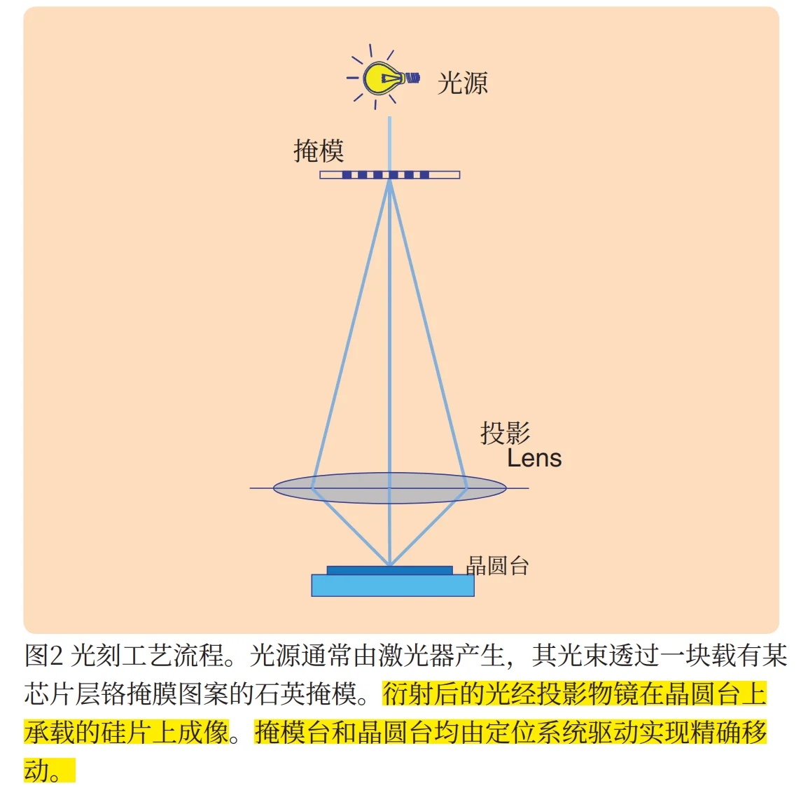
衍射后的光经投影物镜在晶圆台上承载的硅片上成像。掩模台和晶圆台均由定位系统驱动实现精确移动
Positioning Accuracy Specifications¶
图2. 展示了光刻掩模版与晶圆分别相对于投影物镜的位置。实际应用中，光刻掩模版和晶圆被放置在可主动控制的定位台上。任一定位台的定位误差都会导致投影到晶圆上的像发生水平方向的偏移，或使晶圆表面偏离物镜的焦平面。光刻设备的两项关键指标决定了对这两个平台精度的要求。
首先，套刻精度是指光刻设备能够将两幅图形精确地叠加在一起的能力，除了众多其他影响因素外，套刻精度还直接受到晶圆台定位精度的影响。曝光过程中晶圆台的平均位置误差决定了图形在晶圆上的实际位置，这一指标称为移动平均（MA），其定义为：
\(T\) 表示曝光时间，\(e(t)\)表示时间\(t\)变化的位置误差
其次，成像过程会因晶圆台定位精度有限而受到劣化，因为位置误差会降低对比度。曝光过程中定位误差的移动标准差（MSD） 是关键的衡量指标：
MSD代表定位误差中的高频分量，而MA代表低频分量。其边界由曝光时间T决定。对于 38 nm半节距光刻工艺，
MA需控制在约 1 nm以内，MSD则需控制在约 7 nm以内。具体限值取决于制造工艺特性，如光刻胶性能、图像图案中的重复单元以及线宽与间距之比等因素
沿透镜光轴方向（即z方向）的位置误差所引起的焦距误差，以MA和MSD的形式存在，同样会导致成像误差。通常情况下，焦距误差的允许值可比水平方向的位置误差大一个数量级
III. THE STEPPER¶
Basic Operations¶
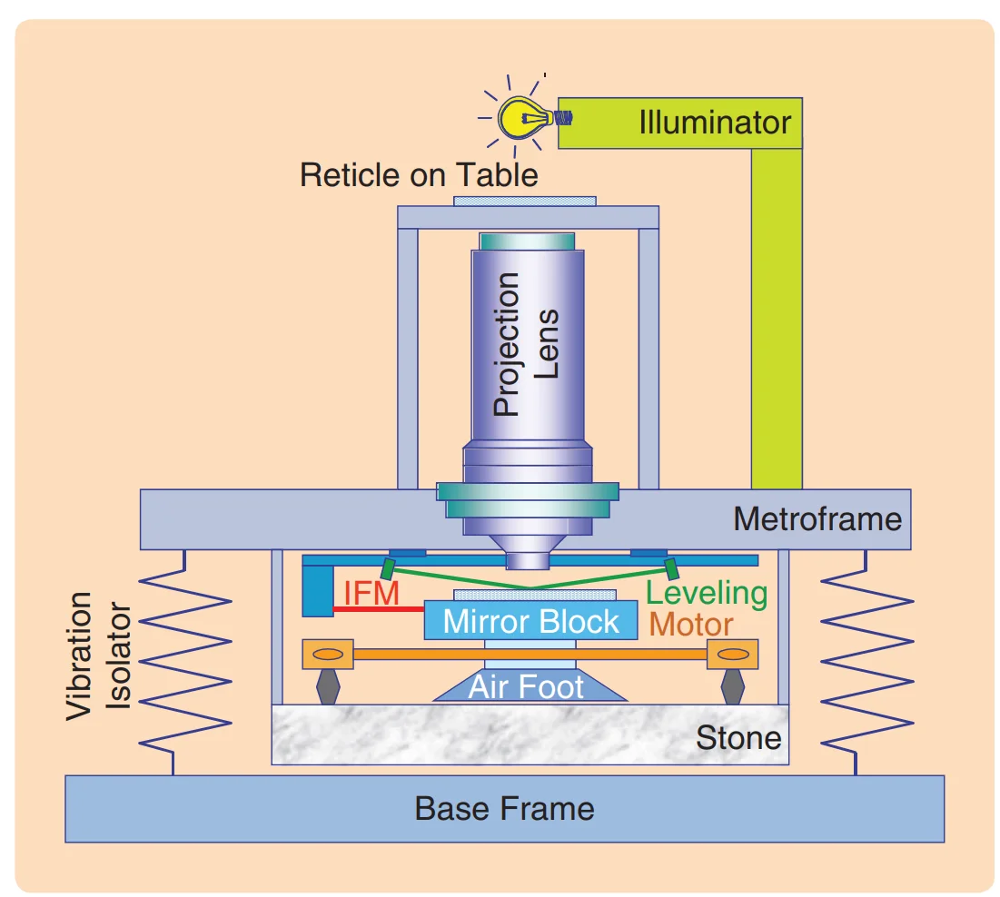
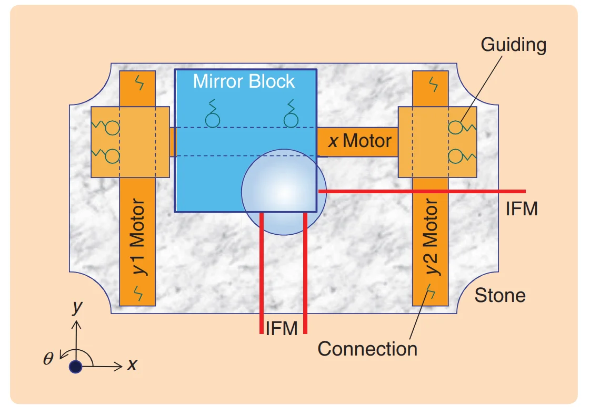
晶圆台俯视图。晶圆台由三个执行器驱动，其中两个沿y轴方向驱动，另一个沿x轴方向驱动。这些直线执行器同时作为水平运动的导向机构，并与动子中的滚珠轴承协同工作。该台通过气浮轴承悬浮于花岗岩基座之上，且直线执行器亦连接至该基座。干涉仪利用晶圆台的镜面侧壁来测量其位置
一个直线电机在 \(x\) 方向上驱动工作台，同时作为滚柱轴承的导向梁。该 \(x\) 向电机还可通过两个 \(y\) 向直线电机在 \(y\) 方向以及绕 \(z\) 轴的旋转方向 \(\theta\) 上移动，这些 y 向电机同样为 x 向电机定子的轴承提供导向作用。
Vertical actuators, which are mounted between the air foot and mirror block, allow the mirror block to be moved in z direction, as well as in rotational directions around the x and y axes, called \(\chi\) and \(\psi\), respectively.
首先，为了使工作台沿y方向运动，y1 和y2 两台电机的力之间的正确平衡取决于实际的x位置。两台电机产生的力\(F_{y1}\)和\(F_{y2}\)会根据工作台相对于镜头中心的实际 x 位置，对工作台产生一个合力\(F_y\)以及一个扭矩\(T_{z}\)。对相应矩阵求逆可得到两个y向作动器力的所需分布：
因此：
基本的水平控制器结构:
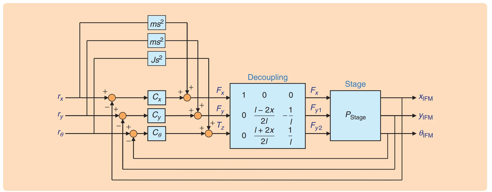
通过干涉仪系统测量工作台的位置\(x\)、\(y\)和\(\theta\)。由于曝光过程发生在镜头中心下方的焦平面处，因此干涉仪坐标系的原点位于该位置。三个单输入单输出控制器分别针对每个方向计算所需的力。一个解耦矩阵将这些力分配至三个执行器。需要注意的是，该解耦矩阵依赖于x方向的位置。前馈力通过将设值参考加速度分别乘以工作台的质量和惯量来计算
然而，这一理想传递函数会受到三种现象的影响：
- 首先，沿y方向的执行器力推动x向电机定子运动，进而使反射镜组件加速。该力通过图5中以弹簧表示的滚柱轴承传递。从动力学角度看，通过这些弹簧施加的力会引发共振
- 其次，执行器的驱动力还会在电机定子上产生反作用力。由于电机定子与构成隔离式测量框架主体的基座相连，该反作用力会激发框架乃至光学镜头的共振
- 滚柱轴承在较长行程范围内可实现近乎无摩擦的运动，但在小位移时容易与导轨发生黏滞现象
Stepper Imaging¶
即使存在上述限制，该系统仍能正常运行，这得益于一个关键优势：在晶圆完成步进并到达新位置后，晶圆台可等待其位置稳定至残余误差足够低时再开启照明光源。步进后的MA和MSD指标表明该系统可用于成像
IV. THE SCANNER¶
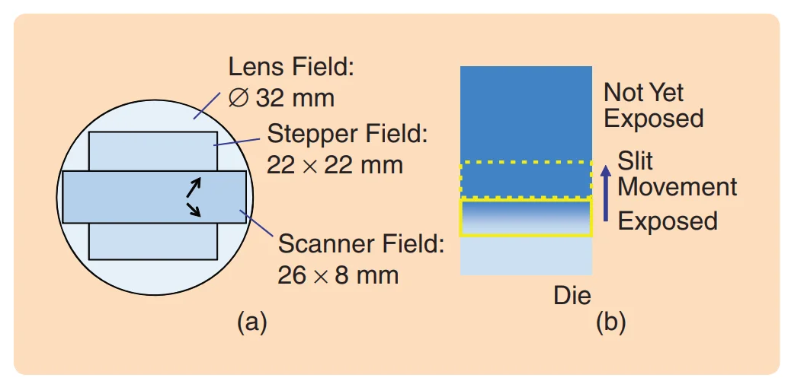
与上述步进式曝光原理不同，在步进扫描法中，每次曝光是通过使晶圆沿被照明的窄缝进行扫描来实现的。晶圆的扫描长度决定了芯片的高边长，通常为32 mm。因此，采用步进扫描法时，使用同一投影镜头即可生成更大的像。
为完整曝光图像，不仅 wafer 需要进行扫描运动，reticle也需要同步进行扫描运动。由于投影镜头的放大倍率为通常为 1/4，因此掩模的扫描速度需达到晶圆扫描速度的四倍。
如今，不仅在静止状态下，在扫描运动过程中也要求具备极高的定位精度。这一要求例如就禁止了在步进式光刻机中所采用的滚柱轴承。此外，已无法再等待系统完全稳定后再开始曝光。当 wafer stage 与 reticle stage 加速至某一裸片的起始位置时，两者必须同时达到所需的定位精度，因为若继续等待，将导致该裸片曝光不完整。
Scanning Performance Measures¶
芯片曝光中的 step-and-scan 原理：
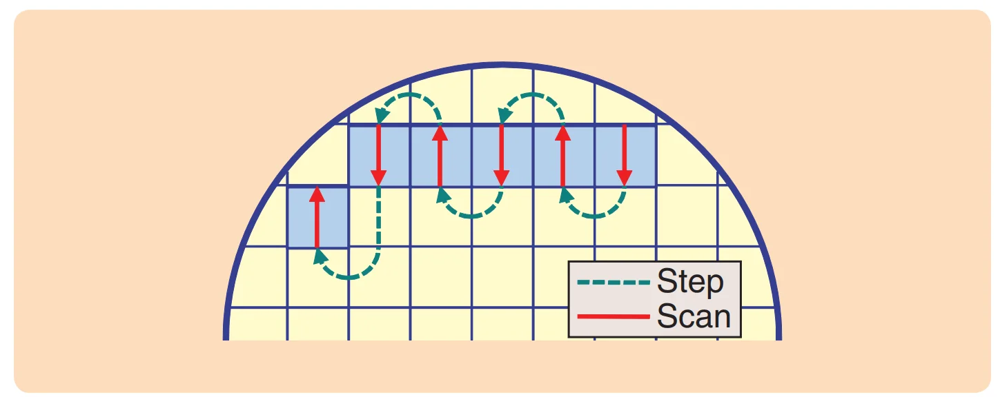
红色直线箭头表示晶圆台与掩模台的同步匀速运动，逐步完成每个芯片的曝光
晶圆在投影镜头下方沿扫描方向运动（红色箭头）。扫描（scan）完成后，光源关闭，并进行一次步进运动（step），移至下一个像场的起始位置（绿色虚线箭头）。由于掩模需与晶圆同步扫描，因此采用蜿蜒式扫描路径有利于避免吞吐量损失。
参考 ASML EXE:5000 的工作示例：https://youtu.be/h_zgURwr6nA
虚线表示晶圆的移动路径，这些步骤将工作台移至下一个晶元的起始位置。在这些移动过程中，光源处于关闭状态。
Lens field 是 projection lens 可提供高质量成像的有限二维区域；stepper 必须让完整 die 同时落在这个区域内，因此 die 尺寸受到圆形 lens field 的直接限制。Scanner 则只使用其中一个狭长的 slit-like instantaneous image field，例如 \(26\times8\text{ mm}\)，通过 reticle stage 与 wafer stage 的连续同步扫描，使完整 die 逐点穿过该狭缝，从而在一次 scan exposure 中形成比瞬时 lens field 更大的完整曝光场，例如 \(26\times24\text{ mm}\)。
所以某一个 wafer point 的有效曝光时间大致和：\(t=\frac{W_{\text{slit}}}{v_{\text{scan}}}\)有关
Scan profile and moving average (MA)/moving standard deviation (MSD) windows:
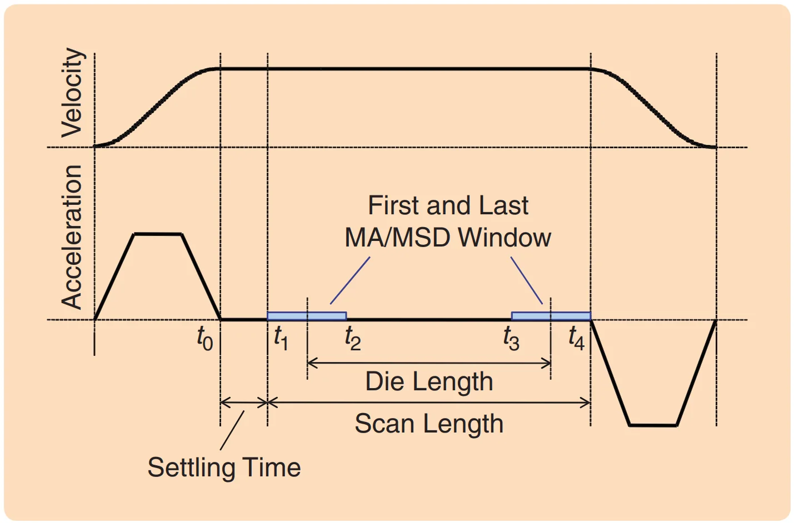
在晶圆台与掩模台加速运动后，需留出一段 settling time 以减小定位误差（positioning errors）。每个芯片位置在曝光过程中所经历的定位误差以移动平均值MA和移动标准差MSD表示。芯片中的第一个点在时间区间 \([t_1, t_2]\) 内被薄曝光，其移动平均值和移动标准差即由此区间内的定位误差计算得到。\(t_3\)是die上最后一个点进入 slit 的时刻，\(t_4\)是 die 完全离开 slit 的时刻。\([t_3, t_4]\) 是最后一个需要计算 MA 和 MSD 的 slit window。
整个匀速扫描段的长度等于裸片长度(die length)、狭缝高度（slit length）以及稳定时间内移动的距离之和。
Scanner Dynamic Architecture Changes¶
扫描式光刻机 Layout:
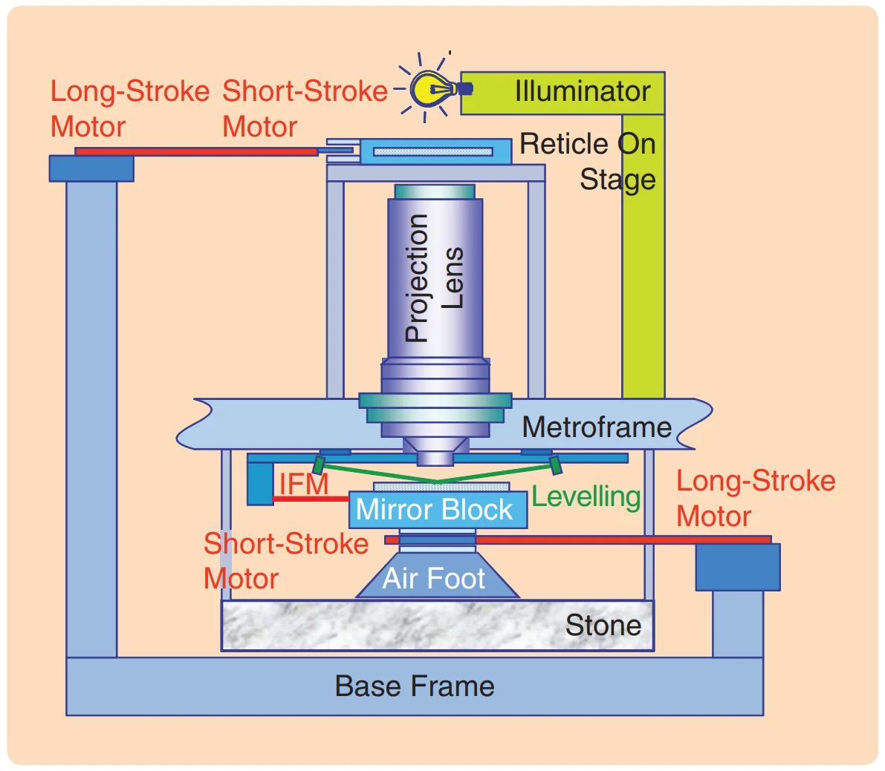
与步进式光刻机相比，扫描式光刻机的主要区别在于增加了可与晶圆同步运动的掩模台，并且将台体执行机构连接至基座框架而非石英台，从而将反作用力从镜头及测量系统等关键部件处导离
Part A. 如何理解这套机械系统？¶
Stage 加速时，电机给 stage 一个作用力，同时一定会给电机定子一个反作用力。Stepper 中，执行器和 stone / metrology 相关结构之间存在机械连接，所以这些数千牛级的反作用力会激起结构振动，最后污染 interferometer 和 projection lens 所构成的精密测量参考系。
而 scanner 不一样：曝光时 stage 本身就在高速运动，不能再等“完全停稳”之后曝光。因此这些反作用力造成的振动必须比 stepper 中隔离得更彻底。所以上图的关键变化就是：不要再把高速 stage actuator 的反作用力直接灌 metrology frame / stone 所在的精密世界。
如果 actuator 安装在 base frame 上，那么 base frame 自己可能因为地板振动等原因移动。精密 wafer stage 如果被这种基座振动拖着走，就不行。
于是论文引入 Lorentz actuator。在 Butler 给出的理想化描述里，Lorentz actuator 对 stage 产生的力主要由电流决定，而不依赖定子的微小运动，所以可以在力传递意义上很好地把 base-frame vibration 与精密 stage 隔开。
但 Lorentz actuator 又有一个致命限制：
真正保持良好线性的 Lorentz actuator 行程只有大约 1 mm。
而 wafer stage 要在 300 mm 量级范围内跑。
于是出现了一个非常经典的 coarse–fine 思路：
整个 wafer 范围的大运动
↓
┌────────────────────┐
│ Long Stroke (LS) │
│ 大行程、较低精度 │
└────────────────────┘
↓
搬着 short-stroke
motor 的 coil 走
↓
┌────────────────────┐
│ Short Stroke (SS) │
│ 小行程、超高精度 │
└────────────────────┘
↓
Wafer
第二个 actuator 提供大范围运动和微米级精度，并移动 short-stroke Lorentz actuator 的 stator
Short Stroke and Long Stroke 控制图：
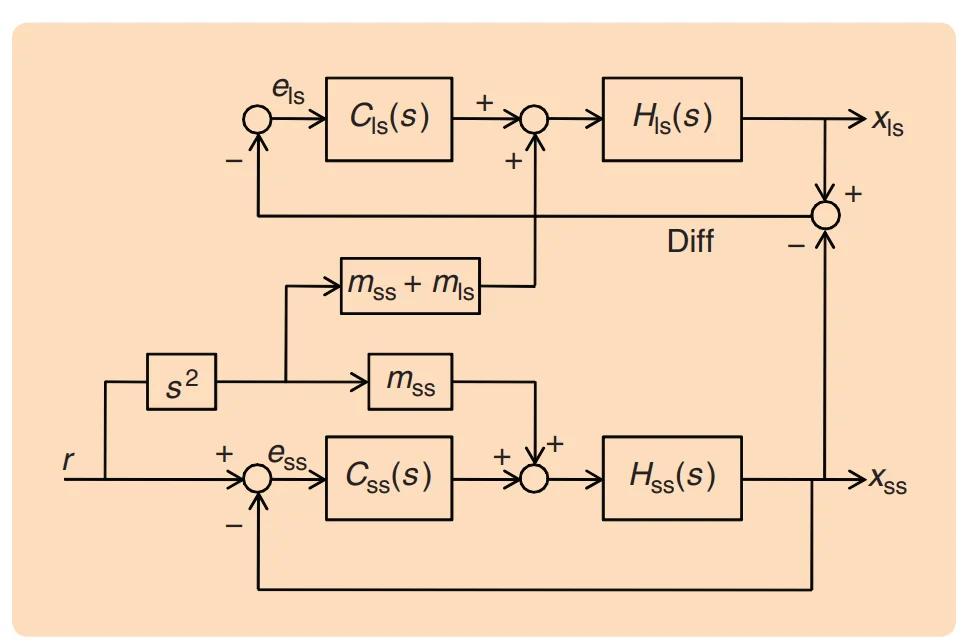
Short Stroke 跟踪真正的曝光轨迹；Long Stroke 跟踪 Short Stroke。
而不是：
Long Stroke 先粗定位，然后 Short Stroke 再精定位。
后面这种想象更接近“先粗调，再微调”的静态定位，但 scanner 中它们是同时运动、同时闭环工作的。
假设 scanner 希望 wafer 的绝对位置为：\(r(t)\)
Short Stroke 的工作是：\(x_{ss}(t)\approx r(t)\)
也就是让 wafer 相对于 lens / metrology frame 精确按照曝光轨迹运动。
Long Stroke 的工作不是直接达到纳米精度，而是：\(x_{\rm ls}(t)\approx x_{\rm ss}(t)\)
也就是：\(x_{\rm ss}-x_{\rm ls}\approx 0\)
为什么？
因为 Short Stroke 的 Lorentz motor 只有约 1 mm 有效相对行程。
如果 Short Stroke 跑到 \(x=100\text{ mm}\)，Long Stroke 还待在 \(x=0\)，Lorentz actuator 早就超行程了。
所以 Long Stroke 必须像一个“跟随平台”：
全局坐标：
0 -------------------------------------------------- 300 mm
SS
↓
● wafer stage
↑↓ 只有很小相对运动
● LS / coil carrier
↑
Long Stroke 跟着跑
Long Stroke 不需要把这个位置做到纳米级。
只需要保证：
始终很小。
这就是 Figure 18。
Long Stroke 和 Short Stroke 并不是真实机械组件，而是两种“行程属性”。
如果将 scanner 简化，可以理解为：
Wafer
┌───────────┐
│ │
└───────────┘
│
Short-Stroke Stage
┌─────────────────┐
│ 精密运动台 / │
│ mirror block │
│ + SS magnet │
└─────────────────┘
↑ ↓
~很小行程~
Lorentz force
↑ ↓
┌─────────────────┐
│ Long-Stroke │
│ Stage │
│ + SS coils │
└─────────────────┘
↑ ↓
大行程驱动
↑ ↓
───────────────────
Base frame
其中 Short Stroke Stage 是 wafer 所在的精密运动体，我们的目的就是让：\(x_{\text{SS}}=x_{\text{wafer}}^{*}\)，其位置我们用\({SS}\)或\(x_{SS}\)表示；Long Stroke Stage 是下面/旁边的大行程粗动平台，它搬着 Short Stroke 电机的一部分一起跑,其位置我们用\(LS\)或\(x_{LS}\)表示。它们是两个不同的运动体，各自承担不同的运动任务。
在光刻机语境里，人们会进一步把对应的物理运动机构简称为 short-stroke stage/system 和 long-stroke stage/system。它们都是真实存在的机械运动体：
- Wafer 所在的精密运动体是 short-stroke 一侧；
- long-stroke 是下面/旁边的大行程粗动平台，它搬着 short-stroke 电机的一部分一起跑。
而驱动它们运动的控制流程就是上方的：“Short Stroke and Long Stroke 控制图”。
SS 和 LS 在扫描过程中同时运动、同时闭环、同时接受前馈。
“SS 是 LS 的 reference”描述的是控制层级，不是时间上的“先后顺序”。
Question
为什么要搞两个物体，而不能直接做一个超精密的 300 mm stage？
答：一个 Lorentz actuator 很适合做精密 force actuation：Butler 强调，在其理想工作区内，stage force 主要取决于 actuator current，而不直接受 stator 微小振动影响，因此有利于隔离 base-frame vibration。问题是其高线性工作范围只有约 1 mm。于是还需要一个大行程的粗动平台，把整个机构搬到正确的大致区域，覆盖数百 mm；Short Stroke 平台在 LS 附近的小范围内进行最终高精度控制。
Example
例如我们希望 wafer 的绝对位置为：\(x^*=100.000000\text{ mm}\)，Long Stroke 的精度没有那么高，它现在实际上到了：\(x_{\text{LS}}=99.999950\text{ }\mu \text{m}\)，也就是还差 \(50\text{ }\mu \text{m}\)。如果只有 LS，那当然完全不能达到纳米级要求。但还有 SS。SS 相对于 LS 向前调整:\(x_{\text{relative}}=50\text{} \mu \text{m}\)，那么 wafer 实际位置就是：
其中，\(x_{\text{relatvie}}\) 就是 Short Stroke Stage 相对于 Long Stroke Stage 的位置差：\(x_{\text{SS}}-x_{\text{LS}}\)
此外，虽然我们说“Long Stroke 跟踪 Short Stroke”，但是这只是描述的控制关系中的“反馈”作用，不是说“SS 动了之后 LS 才追”。实际上，LS 根本不用等 SS “跑出去以后”才知道要动。它们的运动是同时的、闭环的，可以按照下图理解：
同一个 servo 周期
────────────────────────────────────
读取 reference r(t)
↓ ↓
SS controller LS controller
↓ ↓
SS actuator LS actuator
↓ ↓
两级机械体同时运动
LS 负责绝大部分宏观运动，SS 在 LS 基础上不断做很小的精密修正。
所以其实两条轨迹宏观上几乎一样。真正有意义的是它们之间非常小的差：
Part B. 如何理解这套控制系统？¶
现在，我们正式看看 Figure 18：
描述的控制系统，是如何对 Short Stroke Stage 和 Long Stroke Stage 进行闭环控制的。
- \(r\)：wafer 的期望扫描轨迹；
- \(x_{\rm ss}\)：Short Stroke 运动体的实际位置；
- \(e_{\rm ss}\)：Short Stroke tracking error；
- \(C_{\rm ss}(s)\)：Short Stroke controller；
- \(H_{\rm ss}(s)\)：Short Stroke 的机械 plant
- \(x_{\rm ls}\)：Long Stroke 运动体的实际位置；
- \(e_{\rm ls}\)：Long Stroke tracking error；
- \(C_{\rm ls}(s)\)：Long Stroke controller；
- \(H_{\rm ls}(s)\)：Long Stroke 的机械 plant
该图的下半部分（Short Stroke）干的就是标准 servo：
“setpoint − measured position → controller → motor → stage position。”
而且这个位置是以 metroframe / interferometer 所定义的精密坐标系为参考的。
上半部分是 Long Stroke，它关注的是：
存在一个 relative-position sensor 测 Long Stroke 和 Short Stroke 的相对位置，这个 difference signal 作为 Long-Stroke controller 的输入
此外，图中的 \(s\), \(m\) 含义如下：
在 feedforwd 中：
而在 Laplace domain 中：
最终：
这里不需要现在纠结精确实现，只需要知道：feedback 修误差；feedforward 预先提供“加速这么大的质量理论上需要多少力”。
此外，在 Long Stroke 侧中出现 \(m_{\rm SS}+m_{\rm LS}\) 的原因是：Short-Stroke motor 的电磁力作用在 Short Stroke 运动体上，根据牛顿第三定律，它同时给 位于 Long Stroke 运动体上的电机一个反作用力：\(-F_{\rm ss}\)。
如果两级平台都要以相同 acceleration \(a\) 向右运动：
Short Stroke 需要：\(F_{\rm ss}=m_{\rm ss}a\)
但 Long-Stroke motor 不仅要推动 Long Stroke 运动体自身：\(m_{\rm ls}a\)，它还必须抵消 Short-Stroke motor 对它产生的反作用力：\(m_{\rm ss}a\)
所以需要：
也就是 Figure 18 里面出现的：
至此，这张图基本上就解释完了。
Part C. Beyond Figure 18 还有什么？¶
Figure 18 看起来像只有一个 \(x\)，不是说 scanner 真只有一维。
作者明确说，这里是在画一个 1DOF 示例；由于前面经过 force decoupling，每个 axis 可以先分别讨论。
真实 stage 当然是：
这样的多自由度系统。
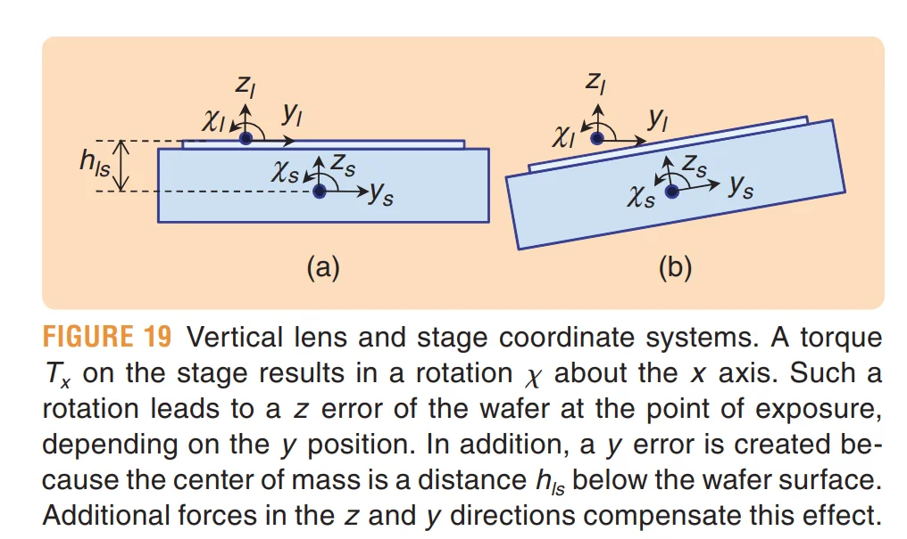
例如：Scanner 是运动中曝光，因此 wafer 必须一边高速扫，一边实时保持在 projection lens 的 focal plane。
也就是说：\(z,\ R_x,\ R_y\) 这些 leveling / focus DOF 也必须动态控制。这需要 wafer 一边做 scan 的同时，还需要一边做 leveling。
这些 leveling / focus DOF 也必须动态控制。
而且一个 rotation 会同时影响多个物理量。例如 Figure 19 讲的是绕 \(x\) 轴施加 torque：\(T_x\) 造成 stage rotation。由于 wafer surface 与 center of mass 有高度差 \(h_{\rm ls}\)，这种 rotation 不只改变角度，还会造成 \(y\) 方向位移。而且 wafer 上当前 exposure point 如果不在 rotation center，还会产生 \(z\) 方向 focus error。
所以一个：\(T_x\)，最终可能需要：\(F_y\) 以及 \(F_z\)进行补偿。论文把这称为从 stepper 的相对独立 horizontal/vertical controllers，逐渐走向 integrated 6DOF control。ResearchGate
现在只需要记住：
一个逻辑 DOF 的运动，会通过几何关系影响其他 DOF，因此必须做坐标变换和 cross-DOF compensation。
这个部分已经不是单纯的控制问题了，而是：
很可能对应着后续算法库设计和硬件开发会遇到的：
- 多控制核；
- stage 间数据依赖；
- communication latency；
- synchronization；
- deterministic scheduling
V. THE DUAL-STAGE SCANNER¶
必须设计一种新的架构，以进一步减小高速运动台及垂直调平力对测量框架所造成的扰动。此外，为利用前馈控制降低调平误差，还需在曝光前获取晶圆表面高度分布图。最后，还需缩短晶圆交换与对准过程中的辅助时间，以维持较高的设备吞吐量。
通过为系统配备两个晶圆台 [7]，找到了一种解决方案。当第一个晶圆台进行曝光时，第二个晶圆台则从设备中卸下上一版晶圆，在台上装载新晶圆，校准晶圆在台上的水平位置，并测量用于曝光过程中对焦的晶圆高度图。
Dual-stage scanner layout:
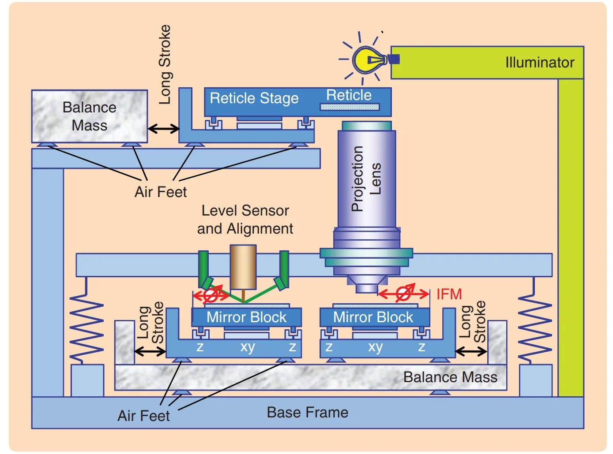
Dual-Stage Scanner Architecture Changes¶
动态架构的一项重大改进是采用了平衡质量块。
此时水平方向的反作用力不再施加于基座框架。现在，Long Stroke 电机的定子与平衡质量相连，该平衡质量通过空气轴承在水平方向上可自由移动。当工作台受到外力时，平衡质量将沿相反方向运动，其位移与工作台质量和平衡质量之比成正比。由于平衡质量的质量远大于工作台质量，其运动幅度相对较小。
为防止平衡质量块发生漂移，采用执行器对平衡质量块的位置进行控制。下图展示了该控制方案。
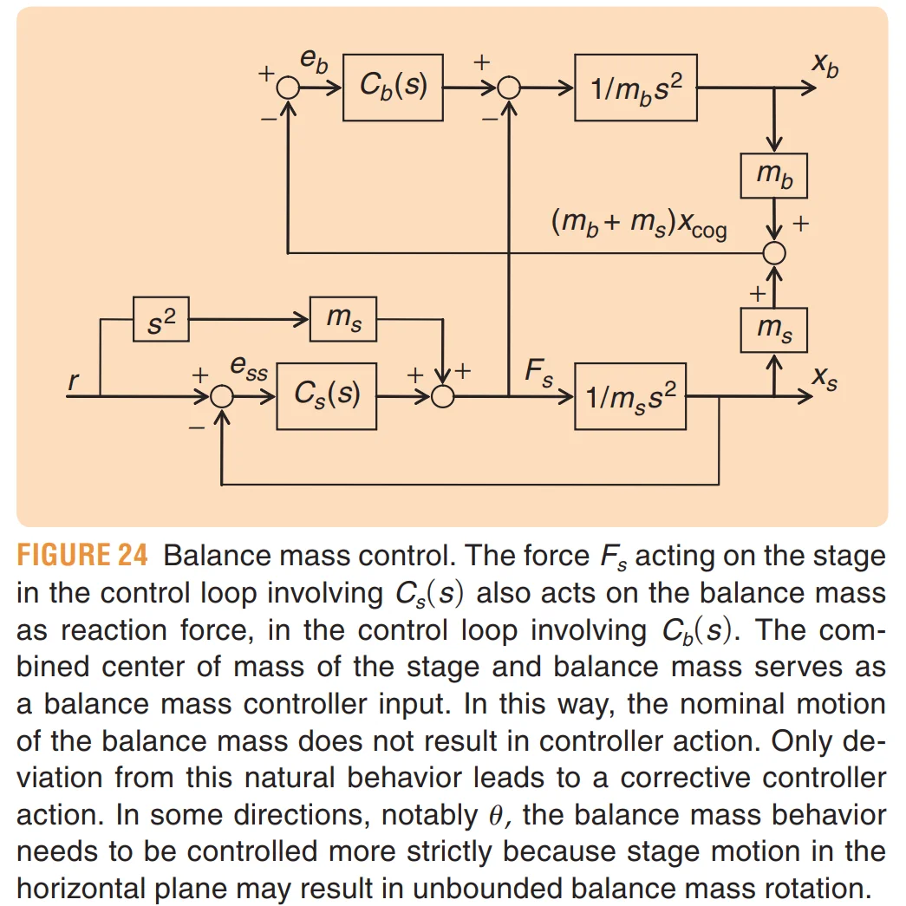
VI. INTEGRATED 6DOF CONTROL OF A STAGE¶
我们现在重点关注对配备全洛伦兹驱动的6自由度平台的控制，这意味着在6个自由度上施加力。
Physical plant components:
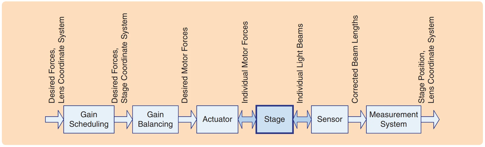
stage 位置由传感器测量，主要采用多路干涉仪进行测量。传感器软件模块会对光束长度进行环境条件与安装公差的修正。根据修正后的光束长度，可推算出 stage 在镜头坐标系下的位置，从而得到其在镜头中心下方焦平面内的位置，即曝光发生的区域。
stage 由 actuators 驱动，这些执行器同样需要针对电机常数的变化及安装公差进行校正。在镜头坐标系下施加的控制力需转换为 stage 坐标系下的控制力（称为 Gain Scheduling），进而进一步分解为各电机的单独控制力，这一过程称为 Gain Balancing。
Preview: 阅读这一章前需要明确的几个概念¶
Concept 1: Lens Coordinate System and Stage Coordinate System¶
lens coordinate system 的原点位于 lens center 下方的 focal plane。传感器的多个 interferometer beam 经过环境、安装误差和 mirror unflatness 修正之后，最终要解算成这个坐标系中的 stage 6DOF position。
为什么选择这里作为控制坐标系？——因为光刻真正关心的根本不是：“stage 相对于自己在哪里？”，而是：“wafer 上正在曝光的点，相对于 projection lens 在哪里？”。
曝光发生在 lens focal plane，所以控制目标天然应该用 lens 为参考。因此可以把 Lens Coordinate System 理解为：
任务坐标系 / exposure coordinate system / global precision reference frame。
另一套是跟着 stage 自己走的：Stage Coordinate System。论文没有用一句教科书式的话单独给出“stage coordinate system 定义”，但从 Figure 27、坐标变换公式以及后面对 center of mass 的描述可以明确看出：这一坐标系是 stage-fixed frame，和 stage 的质量中心及执行器几何关系绑定。
为什么非要搞两个坐标系？——因为：“你想让 stage 做什么”与“电机实际上怎么推 stage”天然属于两套参考系。
控制目标是：“在 lens 下：wafer 应该向 \(+x_{l}\) 运动”
但是 actuator 是物理安装在 stage 上的：
- motor #1 沿 stage 的 \(x_s\) 方向推
- motor #2 沿 stage 的 \(y_s\) 方向推
- ...
如果 stage 已经旋转了一点，那么：
- lens 的 \(+x_l\)
并不等于：
- motor 的 \(+x_s\)。
所以必须做：Lens-coordinate desired force → Stage-coordinate desired force。论文把这个步骤叫：Gain Scheduling，因为这个变换随 stage 当前 position/orientation 而变。
然后还没结束。
Stage coordinate 中的：\(F_{xs},F_{ys},F_{zs},T_{xs},T_{ys},T_{zs}\)，还不是“某一个电机应该出多少力”。还需要变成：
这些 individual motor forces。论文把这一步叫：Gain Balancing，它由 actuator 的几何布局决定。
Concept 2: 所谓 6DOF 到底是哪六个？¶
任何自由刚体都有：3 translations + 3 rotations = 6 DOF:
- 三个平移：\(x, \quad y, \quad z\)
- 三个旋转：\(R_x, \quad R_y, \quad R_z\)
即：
每个自由度的意义如下：
(1) \(x\) 和 \(y\)
Wafer 必须：
- step 到不同 die；
- 沿 scan direction 高速扫描；
- 保持 cross-scan alignment。
所以 \(x, y\) 必须精确控制。
(2) \(z\): focus
Wafer 表面必须保持在 projection lens 的 focal plane。如果 wafer 高了或低了就会 defocus。
(3) \(R_x, R_y\): leveling
真实 wafer 不可能绝对平整，而且 wafer stage / chuck / wafer surface 都存在：
- wafer topography；
- tilt；
- local height variation。
如果 wafer 倾斜，那么 slit 一侧可能在焦面，另一侧不在焦面。
因此必须控制：\(R_x,\ R_y\)，这就是前面已经遇到的：scan + leveling。
(4) \(R_z\): in-plane yaw/alignment
假如 wafer 在水平面内转了一个很小的角，即使 wafer center 的 \(x,y\) 是正确的，图形仍然会发生：
- rotation error；
- overlay error；
- scan direction misalignment。
因此 \(R_z\) 同样必须控制。
Concept 3: 这一章控制的是 wafer stage 还是 reticle stage？¶
这一章实际展开的具体机械模型和推导，主要就是 wafer-stage short-stroke system。
Reticle stage 当然也必须严格控制：Scanner 曝光要求：
\(\text{wafer stage}\leftrightarrow\text{reticle stage}\)高度同步。
论文后面的 Setpoint Design 也明确说，stage setpoint 必须在各方向同步，从而让 wafer stage 和 reticle stage synchronous scanning，减小 wafer 上的 image position error。
但是 Butler 这一章不是在研究：
WS–RS synchronization control architecture
而是在研究另一个更底层的问题：
单个高精度 6DOF stage 内部，怎样完成 measurement → 6DOF control → force decoupling → actuator allocation。
Concept 4: 这一章整体在讲什么？¶
整章其实只有一个核心问题：
要让 wafer 在 lens coordinate system 中按照 6 个相互独立的 DOF 被控制；但是物理 stage 是一个耦合刚体，执行器还安装在 stage 自己的坐标系中。我怎样通过数学变换，把这个 MIMO mechanical plant 尽可能解耦成 6 个 SISO systems？
它不是针对某一个特定的运动过程，例如：
- acceleration phase；
- constant velocity scan；
- deceleration；
- step；
- scan;
中的某一个阶段。而是：整个 wafer-stage realtime servo architecture 的基础层。
只要 stage 正在被精密控制，这些过程就在工作：
- step 时工作；
- scan acceleration 时工作；
- exposure scan 时工作；
- leveling 时工作；
- deceleration 时也工作。
只不过不同阶段的：\(r(t),\dot r(t),\ddot r(t)\)
不同而已。
所以 Figure 25 更像“每个 servo cycle 都会经过的实时控制 pipeline”，而不是某一次扫描中的一个时间步骤。
Concept 5: 细化 Lens Coordinate System and Stage Coordinate System¶
Lens Coordinate System 和 Stage Coordinate System 一般既不共原点，也不共方向。Lens frame 固定在光学/测量基准上；Stage frame 固定在运动 stage 上。
它们的空间关系：
Reticle
│
│ optical system
▼
┌─────────────┐
│ Projection │
│ Lens │
└─────────────┘
│
│ optical axis
│
▼
O_l ← lens center 在焦平面的投影
────────────────────────────────────
focal plane
wafer surface
────────────────────────────────────
wafer
┌──────────────────┐
│ │
└──────────────────┘
wafer stage
Butler 所谓的 Lens Coordinate System 的原点并不在玻璃镜头里面，而是位于镜头中心下方的焦平面上。因此准确来说：
- Lens Coordinate System 的原点\(O_{l}\)位于：投影物镜中心光轴与焦平面的交点。
Lens Coordinate System 如何顶定义？从上往下俯视 wafer：
其中：
- \(x_l\)：焦平面内一个水平方向；
- \(y_l\)：焦平面内与之正交的另一个方向；
- \(z_l\)：垂直于焦平面，基本沿 optical axis；
- \(\theta\) / Butler 的 \(\varphi\) 一类角度变量：绕 \(z\) 的 yaw；
- 另两个旋转分别绕 \(x\)、\(y\)。
论文明确规定了原点，但没有在这里专门给出“+x 一定是扫描方向、+y 一定是什么方向”的通用物理定义，因此这个正方向不要过度解读；它首先只是机台定义的一套正交 Cartesian frame。
最重要的是：Lens frame 固定在机器/光学测量世界，它不会跟 wafer stage 一起跑。
Stage frame 则绑定在运动 stage 上。其原点:
并且：
- \(x_s\)、\(y_s\)：跟 stage 本体固定；
- \(z_s\)：stage 法向；
- stage 如果平移，整个坐标系跟着平移；
- stage 如果旋转，整个坐标系跟着旋转。
论文在前面明确指出，short-stroke actuators 相对于 stage center of mass 有固定的位置和作用方向，同时强调 stage center of mass 并不与 lens-coordinate 原点重合。正因为如此，lens-coordinate force 才必须转换到 stage-coordinate force。
Phase 1: Process Building Blocks¶
工作台位置由多个传感器测量，最常用的是干涉仪。每条测量光束均针对压力、温度等环境条件进行校正。此外，还对机械不对准（即指向误差）以及反射镜的不平整度进行逐光束校正。所有传感器的校正数据在测量系统中被转换为笛卡尔坐标，从而得到以镜头中心下方焦平面为原点的镜头坐标系中的工作台位置:
其中，\(\theta\) 表示绕 \(z\) 轴的旋转，\(\chi\)表示绕 \(x\) 轴的旋转，\(\psi\) 表示绕 \(y\) 轴的旋转。
控制力由六个单输入单输出（SISO）控制器确定，同样以镜头坐标系表示。然而，stage 所受的控制力是由 Short Stroke acuator 施加的，这些执行器相对于台面质心具有固定的位置和作用方向。由于台面质心并不与 Lens Coordinate System 的原点重合，因此必须将镜头坐标系中的力:
转换为台面坐标系中的力：
这一步骤被称为 Gain Scheduling，因为该转换是位置相关的。下一步则是将 Stage Coordinate System 的力进一步转换为各个电机所需的控制力：
这一步称为 Gain Balancing，其具体实现完全取决于actuators 的几何布局
Horizontal Gain Scheduling 和 Vertical Gain Scheduling 这两个小节应该放在一起理解。它们实际上完成同一件事的两个部分：
已经有 6 个 SISO 控制器，它们站在 Lens Coordinate System 中说：“我想要 \(F_x,F_y,F_z,T_x,T_y,T_z\)。”
但真实 stage 的执行器作用在跟随 stage 运动和转动的机械本体上，而且 stage 的质心与 lens 下的曝光点并不重合。
所以必须实时计算：为了让 lens 看来是“纯 \(x\)”“纯 yaw”“纯 leveling”，真实 stage 到底应该承受什么组合的力和力矩？
Horizontal Gain Scheduling 解决水平面的 \(x,y,\theta\) 耦合；Vertical Gain Scheduling 再解决 \(z,\chi,\psi\) 与水平运动之间的耦合。两者合起来，才得到完整 6DOF rigid-body decoupling。这正是整篇论文所谓“通过 actuator-force decoupling，使 6DOF MIMO stage 可以用 6 个 SISO controller 控制”的核心。IEEE Xplore
下面按论文自己的推导顺序拆。
Phase 2: Horizontal Gain Scheduling¶
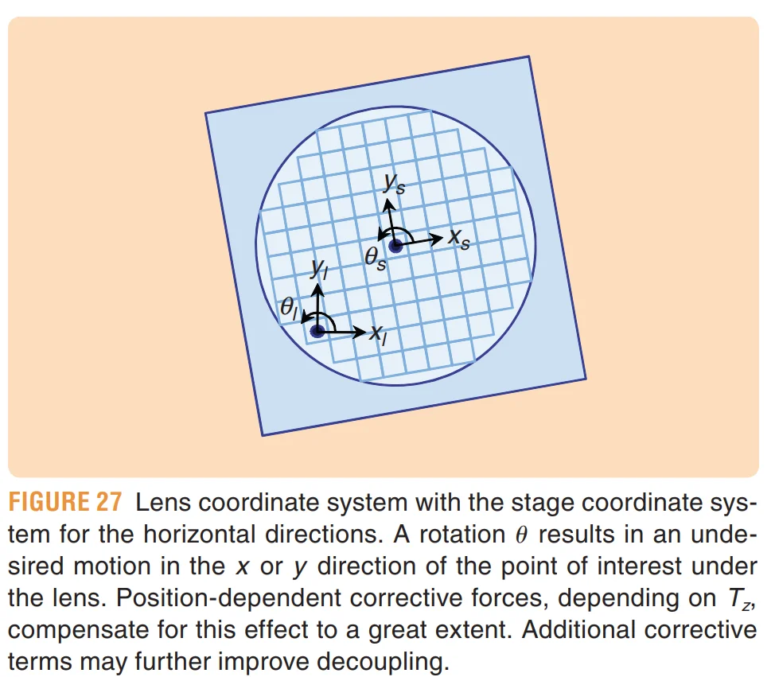
Figure 27 中图上的：\(x_l,\ y_l\)，主要是在标 Lens frame 的轴，而 \(x_s,\ y_s\) 是在标 Stage frame 的轴。它们不是在给某一个点写：
这个点的坐标是 \((x_l,y_l)\)
如果的是“同一个 wafer 材料点”，坐标变换应该怎么写？
假设 wafer 上有一个固定材料点 \(P\)。
它在 stage frame 中的坐标是：
因为这个点焊死/吸附在 stage 上，所以对一个刚体来说，这组 stage-frame 坐标基本是固定的。
Stage frame 原点 \(O_s\) 在 lens frame 中的位置记为：
stage 相对 lens frame 转过角度 \(\theta\)。
那么同一个 wafer 点 \(P\) 在 lens frame 中的位置应该满足经典刚体变换：
其中：
这里包含两部分：
这才是我们熟悉的：“同一个物理点在两个不同坐标系下的坐标”。
论文中公式 11-14的 \(x_s,y_s\) 和 \(x_l,y_l\) 不是在写任意晶圆物理点的完整齐次坐标变换。它是在描述：stage 的 position / 两原点之间的相对位置向量，分别沿 lens axes 和 stage axes 分解后的分量。
也就是说，可以把同一根几何位移向量想成：
这根向量 \(\mathbf r\)：
在 lens basis 中：
在 stage basis 中：
因为是同一根自由向量在不同 basis 下的分量转换，所以只需要旋转：
不需要再额外加 translation。
Horizontal Gain Scheduling 只研究：\(x, y, \theta\)，其中 \(\theta\) 是绕 \(z\) 轴的 yaw。
先考虑理想情况，如果 stage 没有 yaw，即：
那么如果 controller 要一个：\(F_{xl}=100N\)，基本直接令：\(F_{xs}=100N\)即可。但如果 stage 有一个小 yaw，\(x_{s} \nparallel x_{l}\)，于是首先存在一个最简单的坐标轴旋转耦合。
但这还不是最麻烦的。真正关键的是：
stage 的转动中心接近 stage CoM，而曝光关心的 Point of Interest 是 lens origin \(O_l\)。二者通常相距几十甚至上百毫米。
因此如果只给一个 yaw torque \(T_z\)，stage 绕 CoM 转，那么 lens 下那个 wafer point 会产生额外的 \(x/y\) 平移。于是 \(T_z\) 本来属于“旋转 DOF”，却污染了：\(x, \quad y\) 两个平移 DOF。这就是作者所谓的 crosstalk。因此需要 actuator-force decoupling 来消除这种耦合。
首先有（公式11, 12）：
其反变换就是（公式14）：
如果 stage 完全静止，只做静态坐标转换，到这里就结束了。
问题在于：
而且：
stage 一边高速移动，一边还可能存在姿态运动。
所以接下来不能只旋转 force vector。
Actuator 最终控制的是力，而: \(F=ma\)，因此真正想知道的是：
如果我希望在 lens frame 中获得某种 acceleration，那么 stage 本体在自己的 frame 中实际需要什么 acceleration？
因此在公式14对时间求两次导数（公式15, 16）：
真实 scanner 的 yaw \(\theta\) 很小。因此作者采用：
随后又认为曝光 scan 中 yaw 被尽量维持恒定，因此一系列高阶小量可以忽略，比如大意上的：
论文明确说明，曝光扫描时 yaw 被尽可能保持 constant，因此这种简化具有实际背景。
最后得到非常重要的近似式（公式19，20）：
逐项解释 \(\ddot x_s\) 里的四项¶
① \(\ddot x_l\)：正常的 x 运动¶
最简单：
Lens controller 希望 wafer 在 lens 的 \(x\) 方向具有 \(\ddot x_l\)，stage 自然也需要相应 x acceleration。
这是主项。
② \(-\theta\ddot y_l\)：坐标轴没对齐¶
如果 stage yaw 了一个小角度：
那么 lens 的纯 \(y\) acceleration，在 stage 自己看来会投影出一个小的 \(x_s\) component。
所以：\(\ddot y_l\) 会通过当前：\(\theta\) 串到 \(x_s\)。
③ \(-2\dot y_l\dot\theta\)：Coriolis 项¶
这就是标准 rotating-frame dynamics 产生的 Coriolis-type term：
它说明：
同时发生线性运动和角运动时，不能简单把两个运动独立叠加。
比如：\(\dot y_l\neq0,\qquad\dot\theta\neq0\)，那么就会在 \(x\) 方向产生附加 acceleration。
注意：
这里的 Coriolis 跟水流、空气动力学没有关系。
就是“旋转参考系运动学”的 Coriolis 项。
④ \(-y_l\ddot\theta\)：整节最重要的 crosstalk 项¶
这一项最值得掌握：\(-y_l\ddot\theta\)
假设 stage CoM 距 lens center：\(y_l=100\text{ mm}.\)
现在 controller 想产生 yaw angular acceleration：\(\ddot\theta\)
因为真实 stage 是围绕自己 CoM 旋转的，lens 下 point of interest 就会具有一个切向 acceleration，量级为：\(a_x\sim y_l\ddot\theta\)
因此为了防止 wafer image point 在 lens 下发生 x shift，必须同时让 stage center 做额外 x acceleration。
Butler 明确指出，这个项是主要 crosstalk component；加入它之后，曝光点可以保持在 lens center 下，等效来看 stage 是“绕 lens center 转”，而不是简单绕自己的 center of mass 转。
这就是 Figure 27 真正要说明的问题。
随后用：
把式 (19)、(20) 转成 force equation。得到的结构可以写成：
这对应论文公式 (21)、(22)。
上面的推到流程就是 Figure 29 所展示的控制系统要完成的事情。
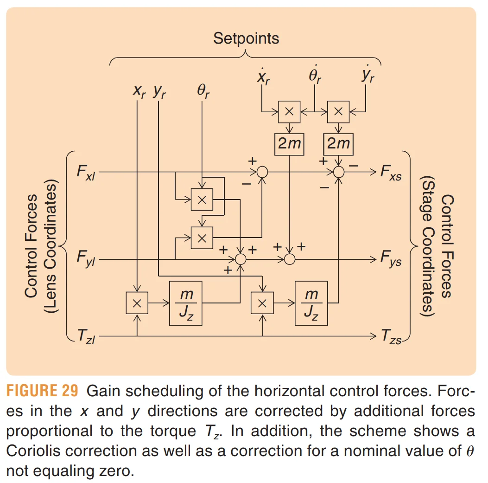
输入包括：\(F_{xl},F_{yl},T_{zl}\)
以及 trajectory/setpoint 里面的：\(x_r,y_r,\theta_r, \dot x_r,\dot y_r,\dot\theta_r\)
然后通过乘法、加减以及常数：\(m, J_z\)
构造上面那些 correction terms，最终输出：\(F_{xs},F_{ys},T_{zs}\)
注意：
本身不需要类似的变换；需要补偿的主要是为了实现这个 torque 而附带应该施加的 translational forces。
现在进入 Vertical Gain Scheduling。
Phase 3: Vertical Gain Scheduling¶
vertical direction 中存在类似 coupling；此外还有一个额外问题：stage center of mass 位于 wafer surface 下方 \(h_{ls}\)。
为什么 Vertical 比 Horizontal 又多了一层麻烦？
Horizontal 方向上，主要考虑的是 stage 在 x-y 平面内的平移和旋转耦合；在 Vertical 方面，我们主要考虑的是：
stage center of mass 并不在 wafer surface 上。它位于 wafer surface 下方：\(h_{ls}\)
于是如果 stage 绕 \(x\) 轴旋转：\(\chi\)，并不是只有角度改变，上方的 wafer surface 会发生 lateral displacement。同样，一个离 rotation center 有水平距离的 wafer point 又会发生 vertical displacement。
例如，考虑：\(T_x\)，Stage 绕 \(x\) 轴旋转，对一个三维刚体来说，绕 \(x\) 旋转会让一个具有：\((y,z)\) 坐标的 point 同时改变 \(y\) 和 \(z\) 坐标的值。所以，\(T_x\) 会导致：
- \(y\)-shift
- \(z\)-focus error
因此为了让 wafer surface 仍然：
- 保持在 lens focal plane；
- 不发生 y-direction image shift，
论文明确说：\(T_x\)必须伴随\(F_z\)和\(F_y\)。
同理，\(T_y\)必须配合\(F_z\)和\(F_x\)。
于是马上得到一个非常清楚的关系：
| rotation command | 天然污染的 translation |
|---|---|
| \(T_x\) | \(F_y,\ F_z\) |
| \(T_y\) | \(F_x,\ F_z\) |
| \(T_z\) | \(F_x,\ F_y\) |
这就是整个 6DOF rigid-body coupling 的骨架。
论文给出的三个 stage-frame forces 是：\(F_{xs},\qquad F_{ys},\qquad F_{zs}\)
它们的具体式子比较长，但每个式子的项基本都属于三类。
（1）第一类：orientation / axis-mixing correction
例如具有：
这种结构。
意思是：stage 有小 roll/pitch 后，lens-axis force 在 stage axes 中会互相投影。
和 horizontal 中的 \(\theta F_y\) 本质一样。
（2）第二类：Coriolis correction
出现类似：\(2m\dot z\dot\psi, 2m\dot x\dot\psi, 2m\dot y\dot\chi, 2m\dot z\dot\chi\)
也就是：\(2mv\omega\)
这些都是 translation velocity 与 rotation velocity 同时存在时产生的动态 coupling。
（3）第三类，也是最重要的一类：torque × lever arm correction
例如结构类似：
这些项在说：
Torque 产生 angular acceleration；只要 Point of Interest 与 stage CoM 存在 lever arm，angular acceleration 就会转换成 Point of Interest 的 linear acceleration，所以必须施加相应的 translational force 来抵消。
这和 horizontal 的 \(\frac{m}{J_z}y_lT_z\) 是同一种物理机制，只是现在扩展到了三维。
Horizontal + Vertical 合起来以后发生了什么？¶
这时 six SISO controllers 给出：
Gain scheduling 综合 horizontal 和 vertical compensation，得到：
论文特别说明：
最终 \(F_{xs},F_{ys}\) 要把 Horizontal 和 Vertical 两部分的 correction 合并，避免基础的 \(F_{xl},F_{yl}\) 重复加入；而三个 torque \(T_x,T_y,T_z\) 不需要另外 adjustment，在 lens/stage 两套表示中保持相同。
这一切最终在控制意义上实现：
也就是：
Horizontal/Veritical Gain Secheduling 的 workload 分析¶
在论文采用小角度近似以后，在线部分主要就是：
- 标量乘法和加减法
- state/setpoint product
典型 primitive 是：
输入主要分成两类：
- Controller 输出：\(F_x,F_y,F_z,T_x,T_y,T_z\)
- trajectory/setpoint state: \(x_r,y_r,z_r,\theta_r,\chi_r,\psi_r\) 以及 \(\dot x_r,\dot y_r,\dot z_r,\dot\theta_r,\dot\chi_r,\dot\psi_r\)
常数则包括：\(m,\ J_x,\ J_y,\ J_z,\ h_{ls}\)
输出仍然只有六个 generalized forces。
这意味着它有几个特别鲜明的硬件特征：
- 单次问题尺寸极小，没有大 GEMM；
- 乘加链较短；数据高度相关；
- 必须每一个 servo cycle 都更新；
- latency/jitter 比峰值算力重要；
- 不同 compensation terms 又有明显 parallelism。
因此数据流很漂亮：
trajectory generator ─────┐
│
six SISO controllers ─────┼──► gain scheduling ─► gain balancing
│
machine constants ────────┘
Some Key Points¶
P1: 为什么“力”也要区分 Lens coordinates 和 Stage coordinates？¶
真实物理作用力只有一套。坐标系不同，只是我们描述这个力/力矩的方式不同。“Lens-coordinate force”和“Stage-coordinate force”并不是说机器里存在两份力，而是在说：我们用哪套坐标基、围绕哪个参考点，来表达希望 stage 获得的合力和合力矩。
论文明确写道：6 个 SISO controller 得到的 control forces 位于 lens coordinates，而 short-stroke actuators 相对于 stage center of mass 有固定位置和方向；由于 stage CoM 与 lens-coordinate origin 不重合，因此必须把 lens-coordinate generalized forces 转换成 stage-coordinate generalized forces。
P2: \(F_{il}\)和\(T_{il}\)到底是什么？¶
论文定义：
它们不是六个真实电机的力，而是：
站在 Lens Coordinate System 中，希望这个刚体获得的六个 generalized force / torque commands。
P3: 那 \(F_{is},T_{is}\) 又是什么？¶
经过 Horizontal + Vertical Gain Scheduling 后：
这表示：为了实现刚才 lens-space 中想要的运动，真实 stage 刚体在自身坐标系/CoM 意义下应该获得怎样的合力和合力矩。
比如 controller 想要：\(T_{zl}\neq0,\qquad F_{xl}=F_{yl}=0\)，意思是：“从 lens 看，我只希望 wafer 发生纯 yaw，不希望曝光点发生 x/y 位移。”
但是如果你真的只给 stage 一个 \(T_z\)，则：
stage 会绕自己的 CoM 旋转，从而造成 lens 下曝光点移动。
所以 gain scheduling 最后可能算出：\(T_{zs}=T_{zl}\)，但同时：\(F_{xs}\neq0, F_{ys}\neq0\)
而真正的六个 actuator forces 还在下一层
论文接下来才定义：
这些才更接近：真正每一个 physical motor 应该输出多少力。
于是严格区分三层：
P4: controller 如何给出 \(F_x,F_y,F_z,T_x,T_y,T_z\) ？¶
就是前面已经见过很多次的 servo controller（例如 Figure 18）。
案例：
Example
对于 x 轴，可以抽象为：\(e_{x}(t)=r_{x}(t)-x_{l}(t)\)
然后送给 \(C_{x}(s)\)，得到：
同理：
P5: 那 \(x_r,y_r,z_r,\theta_r,\chi_r,\psi_r\) 又是什么¶
这里下标：\(r\)=reference
所以：\(x_r\)
就是此时此刻，希望 stage 在 lens x direction 应该位于哪里。
同理，\(y_r,\quad z_r\) 是期望位置。\(\theta_r,\quad\chi_r,\quad\psi_r\) 是期望姿态。
于是可以组成：
这就是：
6DOF reference trajectory / setpoint trajectory。
它告诉 stage：每一个时间点，你理论上应该处于什么 6DOF pose。而实际测量是：
两者做差：\(\mathbf e(t)=\mathbf r(t)-\mathbf q(t)\)
然后每一个分量进入自己的 SISO controller。
P6: 现在，我们来大致看看完整的 servo cycle¶
假设第 \(k\) 个实时控制周期：
- Step 1. 上游给 reference: \(\mathbf r[k], \dot{\mathbf r}[k], \text{possibly }\ddot{\mathbf r}[k]\)
- Step 2. sensor 测 stage，得到：\(\mathbf q_l[k]\)
- Step 3. 计算 tracking error: \(\mathbf e[k]=\mathbf r[k]-\mathbf q_l[k]\)
- Step 4. 六个 SISO controllers 并行计算 \(\mathbf f_l[k]\)，即：\(F_{xl},F_{yl},F_{zl},T_{xl},T_{yl},T_{zl}\)
- Step 5. Gain Scheduling: 利用 \(\mathbf f_l[k]\) + \(\mathbf r[k],\dot{\mathbf r}[k]\) + \(m,J,h,\ldots\) 求：\(\mathbf f_s[k]\)
- Step 6. Gain Balancing: \(\mathbf f_s[k]\rightarrow\mathbf f_m[k]\)
- Step 7. motor current / amplifier 把 force command 变成电流。
- Step 8. Lorentz actuators 真正对 stage 施力，于是改变：\(a, v, x\)。
- 下一周期重新测量。
Phase 3: Effect of Stage Dynamics¶
总结为如下几点：
第一，Figure 30 的 6×6 transfer matrix：
对角项是期望响应，非对角项就是 crosstalk。
第二，对于理想刚体，前面的 Horizontal + Vertical Gain Scheduling 可以做到：
即 exact decoupling。ResearchGate
第三，真实 stage 不是刚体。Motor block 与 mirror block 之间存在有限 stiffness，因而存在数百 Hz 到 kHz 量级的 flexible modes。
第四，因此 rigid-body decoupler 对真实 plant 只能做到approximate decoupling
残余 off-diagonal terms 会作为 disturbance 进入其他 SISO loops。
第五，真实 plant 还是：position dependent
stage 换位置时，各 structural mode 在 sensor measurement 中的参与程度改变，因此 transfer function / antiresonance / phase 也改变。
第六，在实际扫描中，这些问题表现为：
- acceleration 后的 structural ringing / settling；
- vertical leveling motion 串扰到 horizontal tracking；
- 但经过完整 controller 后仍可以实现 single-nm 量级的 MA/MSD。
从算法/硬件项目视角，这一段还有一个非常重要的结论：
不是所有耦合都应该靠一个越来越复杂的实时“精确逆模型”去消掉。
Butler 展示的实际思想更接近：
简单、确定性的 rigid-body decoupling+robust SISO feedback+feedforward+mechanical design
这对以后设计“算法库”很重要。因为它告诉我们，实时链路里很可能不是一个巨大 MIMO optimizer，而是若干层结构明确的 primitive：
而真正复杂的 flexible plant 被部分留给 robust feedback 去处理。
Phase 4: Other Critical Control Aspects¶
1. Disturbance Rejection：除了跟踪轨迹，还要不断抵抗扰动¶
前面我们主要讨论的是：
但即使 reference 完全正确，stage 仍然会被各种外部因素“推离”理想位置。
Butler 将扰动举成两类。
- 第一类是 measurement disturbance，例如 projection lens 自身振动；由于 interferometer 测的是 stage 相对于 lens 的位置，lens 动了也会表现成 position error。
- 第二类是直接作用于系统的 input disturbance，例如 immersion water flow 引起的扰动力、放大器噪声等。
作者强调工程上的第一原则是先从机械/物理源头尽量减小这些扰动，然后再让 controller 做剩余的 disturbance rejection。由于很多扰动集中在特定频率，作者特别强调 frequency-domain controller design。
需要建立这个控制系统概念：tracking control 不是只纠正 trajectory error，而是：reference tracking + disturbance rejection
2. Setpoint Design：轨迹本身也是控制系统设计的一部分¶
之前我们一直把
当成“上游已经给好的 reference”。
Butler 在这里强调：
这些 reference 本身怎么生成，也会决定最终定位性能。
首先，六个方向的 setpoint 必须互相同步；更重要的是 wafer stage 与 reticle stage 的 setpoint 必须严格同步，否则 scanning 时 reticle image 和 wafer 位置就会错位。论文甚至给了一个很极端的例子：scan velocity 为 \(1\,\mathrm{m/s}\)、projection optics 长度约 \(1\,\mathrm m\) 时，仅光传播时间带来的相对 timing 问题就对应约 \(3\,\mathrm{nm}\) 的 image position error，因此 timing 不能被视为普通的软件时间误差。
其次，轨迹是否“平滑”很重要。作者用 setpoint order 表示 position reference 有多少阶连续导数。轨迹越不平滑，高频频谱成分通常越多，就越容易激励前面我们看到的 500 Hz、800 Hz 等 structural resonances。反过来，专门设计 smoother setpoint 可以避免激励某些机械模态。
所以不要把 trajectory generator 理解成一个简单的：
起点 → 终点插值器。
它需要兼顾：
- throughput
- \(v\)/\(a\)/jerk constraints
- WS-RS synchronization
- resonance avoidance
从算法库角度，这就是后面应该单独建立的：Setpoint / Trajectory Generation 算法族。
3. Setpoint Feedforward：不要等产生误差之后才让 feedback 去救¶
这一节其实很重要，因为它把前面一直出现的 acceleration feedforward 推进一步。
如果我们已经知道 reference acceleration：\(\ddot x_r\)，并且知道 stage mass：\(m\)。那么理论上加速 stage 需要：\(F_{\rm ff}=m\ddot x_r\)
也就是说，在 stage 还没有产生 tracking error 之前，就可以提前给出主要的驱动力。
Feedback 则只需要处理：model mismatch + disturbance + residual dynamics
这是为什么高性能 motion control 非常依赖 feedforward。
论文给了一个很有价值的数量级：一个 \(20\,\mathrm{kg}\) stage，以 \(30\,\mathrm{m/s^2}\) 加速时需要约 \(600\,\mathrm N\) 的力。在 200 Hz feedback bandwidth 的例子中，如果希望残余 error 只有约 \(1\,\mathrm{nm}\)，feedforward gain 需要达到约 99.99% 的准确度，相当于 600 N 中只允许约 60 mN 的 mismatch。产生这种 mismatch 的原因包括 amplifier gain、motor constant、wafer mass 等实际参数误差。
这个数字非常能体现光刻控制的工程特点：
不是“算一个 \(F=ma\)”有多难，而是 600 N 的大动态运动中，残余误差却要控制在纳米量级。
而且 feedforward 的 timing 和幅值一样重要。论文指出，由于 D/A conversion 和 controller computation 等产生系统 delay，feedforward 与 position reference 之间必须做 timing compensation；文中 10 kHz sampled system 的例子中，微秒量级 timing mismatch 已可对应约 1 nm 的残余误差，所以 feedforward magnitude 和 timing 都会针对每台 stage 自动校准。
4. 为什么又出现 jerk / snap / crackle / pop？¶
简单 acceleration feedforward：\(F_{\rm ff}=ma_r\)
隐含假设 stage 就是理想刚体：\(P(s)\approx \frac{1}{ms^2}\)
但我们刚刚已经知道，真实 stage 有 flexible modes。
所以只补偿质量项 \(ma\) 不能完全预测真实 stage dynamics。
作者因此说，可以继续使用 position reference 的更高阶导数：
其中 jerk、snap、crackle、pop 分别是 position 的 3、4、5、6 阶导数。这些项进入 feedforward 后，可以构造一个更好的 plant inverse，使 feedforward 自己承担更多 stage dynamics，最终减少 feedback controller 必须处理的 tracking error。
本质是：
stage 的真实动力学越复杂，就用更丰富的 reference information 去预测它需要什么力。
这也是以后 model-based feedforward、inverse dynamics、data-based feedforward 的核心思想。
硬件上，这类在线计算通常仍然比较规整：
不一定算力巨大，但同样要求 hard real-time。
5. Other Feedforwards：Feedforward 不一定来自自己的 setpoint¶
之前：\(\text{reference}\rightarrow\text{feedforward}\)
作者指出，如果 projection lens 的 acceleration 可以测量，那么 lens vibration 本来会作为 stage 的 disturbance，但现在既然已经提前知道 lens 怎么动，就可以把这个 measurement 直接转换成一个 additional feedforward，使 stage 主动跟随 lens，而不是等 position error 出现以后再用 feedback 修正。
这里应该形成一个更一般的定义：
只要某个未来/当前扰动能够从别的信息源提前知道，就可以在它造成 tracking error 之前主动补偿。
所以：
自己的 trajectory ──────────► feedforward
lens acceleration ─────────► feedforward
another stage motion ──────► feedforward
long-stroke motion ────────► short-stroke feedforward
known position disturbance ─► feedforward
从硬件架构角度，这一条很重要，因为它意味着实时控制系统并不是六个互不交流的 SISO core。
实际上可能存在：controller-to-controller / stage-to-stage data dependency
因此 interconnect latency 和 deterministic communication 也可能进入 critical path。
6. Calibrations：为什么不能一套参数烧进去所有机器通用？¶
理论设计里，两台同型号 stage 应该完全一样。
现实制造里不是。
作者列出的生产偏差包括 actuator force direction、motor constant、dynamic behavior 等。因此每台机器都需要自动 calibration，让实际机器重新符合设计模型。
论文明确列出需要自动标定的东西包括：
- gain balancing parameters
- gain scheduling parameters
- motor gain / linearity
- interferometer beam pointing
- mirror surface unflatness
以及不同 stage controller 之间的：timing differences
这些参数都是 per-machine calibration。
VII Conclusions¶
现代光刻机并不是靠一个极其高级、统一的大型 MIMO controller 获得纳米级精度，而是通过机械架构、解耦、经典 SISO feedback、精确 feedforward、频域 disturbance rejection 和 calibration 的组合，把一个极复杂的系统“工程化”成大量较规则、可控的问题。
作者总结，machine architecture 首先通过降低 reaction force 和 external disturbances，创造更加安静的机械环境；stage 的已知 nonlinearities 再经过补偿，使其行为接近线性；随后采用 multiple classical SISO controllers，同时辅以 actuator coordinate decoupling 和 feedforward。频域设计处理特定 disturbance frequencies，而 setpoint 的时间域行为则负责运动过程。